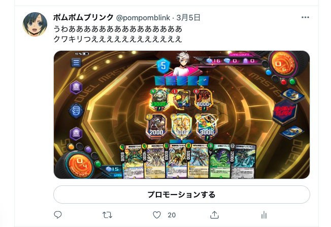
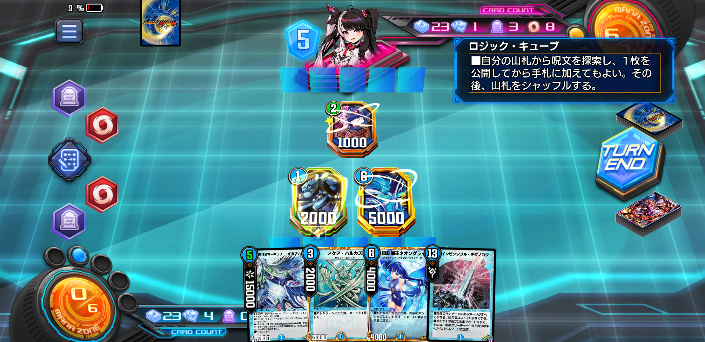

【ランクマ】ネット縛りチャレンジ【マスター】
ネット情報を絶ってデュエプレを楽しめるか？
まず、3月中旬に世の中辛いことでいっぱいいっぱいになったので、SNSを中心としたデジタルデトックスを始めた。この記事はそんなところから始まる。
デュエプレの成績は長らく落ち込み始めていた。
先々月のNEXカップはギリギリNew Divisionでマスター入り。
しかし先月のキリコカップではとうとうNDでのマスター入りも逃してしまい、実に1年と5ヶ月ぶりの両マスター到達失敗である。
理由としては、自分の実力が環境に追いつかなくなってきたことと、環境デッキをコピーするばかりのランクマッチに疲れてきたことが挙げられる。

一応の補足として、ここまで別段デュエプレが嫌になっていたわけではない。毎月自分なりにデッキを組んで楽しめてはいた。ただ去年より時間も取れなくなり、成績も落ち込みつつはあったというだけなのだ。
が、先述のデジタルデトックスでTwitterをやめた結果、あまりに生活が快適になってしまって驚いたのだ。
そしてこの状況は、兼ねてから気になっていた「ネット情報なしでどこまで勝てるのか？」を検証するのにちょうど良いと思い、ついでに実践してみた形になる。
もくじ
- ネット情報を絶ってデュエプレを楽しめるか？
- デュエプレとTwitterは紐づいている
- 本当にネットを見ないと勝てないのか？
- ネット情報を遮断してNDマスター到達
- ADマスター到達失敗
- ネットを見ないとそもそもデュエプレが辛い
- 両方楽しめばいいじゃない
- 後日談
デュエプレのランクマでは、上を目指せば目指すほどデッキや戦術が洗練されていくが、そこが面白くないプレイヤーも多くいると思う。
「最終的には金かけてテンプレを真似て運ゲーを回し続けるゲーム」
かなり悪い言い方になってしまって恐縮だが、プレイヤーの中にはランクマにこういう印象を持っている人もいる。
対戦型ゲームである以上仕方のないことだが、今の時代はネットがあるため攻略情報がものすごい速度で出回る。すぐに強いカードが周知されて、それを知らないとただただボコボコに殴られる。
今の30代付近の世代がコロコロ読んで近所のカードショップでパックを向いて遊んでいた状況とは全く違うことは、サービス開始当初から嘆かれていた。
友達とやるデュエマが楽しかったのであって、ネットで顔の見えない相手と延々と戦わされるランクマのギャップは非常に大きい。メインコンテンツであるそれを楽しめず、いつしか去ってしまうプレイヤーはいる。
特に、「自分で自由にデッキを組む楽しみ」をランクマのガチ環境に奪われる状況が個人的には辛いと思っている。
この挑戦は、「結局ネットでテンプレコピーしないと勝てない」という状況に一矢報いることができるのか？というものだ。
デュエプレとTwitterは紐づいている
デュエプレを楽しむ上で、多くのプレイヤーがSNSなども同時に利用すると思う。Twitterでは公式が新カード情報を公開して盛り上がったり、デッキビルド杯もバトルアリーナ優勝者予想などもTwitterアカウントを持っているプレイヤーしか投稿できない。
またプレイヤー主催大会の開催も活発であり、多くはTwitterで参加者を募っており、最近では公式もそうした大会をサポートする姿勢を見せ始めた。他にもチームやDiscorodサーバーの結成があったり、そうでなくともフォロー&フォロワーの関係で気楽に交流をしているだけで楽しめる。
Twitterでは日常的に、大型連勝を記録したら自慢しあったり、強い構築を真似したり、理不尽な負け方をしたら愚痴を吐いたりすることもできる。
それだけでなく、本気でデュエプレに打ち込む場合には非常に有益な情報が共有されており、ランクマッチを勝ち進む上ではそれらの情報をほぼ避けては通れないほどだ。
マスターランクでの上位デッキ使用率を集計してくれるチームや、各環境を考察し勝ちやすいデッキを教えてくれる人もいる。さらにはYoutubeで毎日強力なデッキが紹介されており、それらを事前に調べておくことでデュエプレでの勝率を上げることができる。
デュエプレで本当に勝ちたいのなら、これらのようなネット攻略情報を利用しない手はないだろう。事実、毎月最終ランキング100位以内のデュエルマスターレジェンドのプレイヤーも大半はTwitterアカウントを持っており、それはもはやTwitterもデュエプレの一部と言っても過言ではない。
本当にネットを見ないと勝てないのか？
ここで冒頭に戻る。デジタルデトックスを通してネットを自分から遠ざけることで、やりたいことの実現ができないかと考えた。
具体的にデュエプレで何をするのかというと、今までお世話になってきたTwitter、Youtube、noteを一切見ないようにする。
最終100位以内入賞者のデッキも、BEANSデータも、Youtubeの構築解説も、デッキ解説noteも一切見ない。
自分の力だけでデッキを組み、マスターランクに到達して満足することはできるか？というチャレンジだ。
実際ネットで流行のデッキや戦略を無視して、ランクマッチのガチ環境で戦うことはかなり厳しい。実際これまで嫌というほど味わってきたから。
だが、趣味で遊んでいるゲームで無理なら、リアル面では今後も辛い思いをしながら世の中と戦っていくしかなくなるのではないか。それは嫌だ……。
ある意味負けられない戦いだ。
ネット情報を遮断してNDマスター到達
結論としては、無事にネット断ちをすることでNDでのマスター到達に成功した。
本題から外れてしまうので今は使ったデッキに関しては割愛させていただくが、デジタルデトックスは思った以上の効果をもたらしてくれたのは確かだ（この記事の最後にデッキへのリンクがありますのでぜひ）。
ここ数ヶ月は月の後半でようやくマスターに到達していたが、ネット断ちを決行した今月は8日の時点でマスターに到達することができた。しかも、自分の力で考えたデッキを使ってだ。
ネット断ちをすることで攻略情報を得られなくなる心配はあったが、むしろそれらを断つことで情報に翻弄されることがなくなった。
なんと言ってもこれに尽きた。
まずネットで環境上位デッキを知ってしまえば、自然とそのデッキを使うとき楽しくなくなってしまう。これは誰かが考えたデッキなんだよな……みんなこれを真似してるんだよな……。
ネット断ちをすることで、そんな先入観を無くし、純粋にどんなカードも使えるようになった。
先月でいえばNEXカップではボルシャックNEXとブレイブルピアがTier1として認知されており、何となく使うのが嫌になっていたが、今月はそういうものがないのは非常に快適だった。これ強そうだなと思ったカードは何でも使える、これがもう楽しい。
何を使っても「自分の切り札だな」と思える。
自分で考えた末に結果を残せるのがやはり非常に楽しい。この味を知ってしまうと、テンプレをただ使うだけでは物足りなくなってしまった。

また、毎日のように強いデッキはネットで流れてくるが、それらを見ないものよかった。
これは自分が今月NDではゴールドランクから発進していたことも関係するだろう。
マスター帯で流行っているからと言って他のランクでも流行っているとは限らないし、むしろマスター同士の一歩先の読み合いのために刺されたカードが他のランクではノイズになっている、ということもあった。
今までは「Twitterであのデッキが注目されてたから、今日は対策としてこれを使おう」という逆張りをして負けることもあったのだが、事前にそのような先入観がなくなったのもよかった。ネットで見た構築よりも実際に自分が潜って感じた印象を信じた方が勝率は高かった。
ADマスター到達失敗
しかし、調子が良いのはここまでだった。NDでマスターに到達できたので、せっかくだからAll Division含めて両方マスターを目指すことにしたのだが、結果として未だプラチナ3である。
ネット情報云々以前に、デュエプレ自体が楽しめなくなってしまったからである。
ADはシルバーランクからのスタート。プラチナ5までは一気にジャンプアップして登ることができたのだが、それ以上は界隈で俗にいう「沼った」状態である。
環境中期に一気に環境デッキが変わり、バイオレンスフュージョン型の5cデッキがプラチナ5付近から一気に普及していたのである。
それまで愛用していたデッキが非常に相性が悪かったため、次々にデッキを持ち替えていた。最初はオリジナル構築で試行錯誤していたが、徐々に余裕がなくなりテクノやアポロ、ガントラやメカオー、ツヴァイやドリメなど少しでも勝ち筋がありそうだと思ったら何でも使った。

が、どのデッキを使っても勝てない。戦術をコロコロ変えるためプレイミスを起こしやすく、それに伴い運も悪くなっていく。どんどん感情が落ち込んでいき、些細なプレイングの「ズレ」がストレスに変わっていく。
アポロやテクノなどの殿堂カードが３試合連続で盾落ちするわ、8枚積んでる２コスブーストは引けないわ、トリガー16枚構築でノートり貫通を決められまくるわ……。デュエプレをしている人なら誰でも経験があるであろう、全てが嫌になるようなランクマッチでの理不尽の連鎖である。
実際のところそこまで勝ち目がないわけではないのだが、あまりに何度も不利な状況に立たされすぎて、僅かに残っている勝ち筋すら自分から潰していってしまう。
また、ADでこの挑戦を行なっている4月中旬は所謂「環境中期」であり、一度3月末のランキングが決定し、その環境で強いデッキが一気に知れ渡っている。
そこからさらに実績をもとに各デッキが研究されメタが回った環境だ。
つまり完成度の高いテンプレが定着しており、生半可な個人のデッキでは太刀打ちできなくなっている。
さらに環境が固まっており、わざわざネットを調べなくても何が強いのか嫌でもわかる。バイオレンスフュージョンもBロマも許さねえ。
こうなってくると自前の逆張り根性でそれらを使わなくなり、なんとか別デッキで勝ちにいこうとしてしまう。もうネット関係ない。
ネットを見ないとそもそもデュエプレが辛い
そんな状態が2週間も続き、ついにはスマホ投げまでしたところでデュエプレと距離を置こうと思った。
正直言って、ネットで強いデッキを見てそれを使ったとしても、状況は変わらなかっただろう。本人が全くデュエプレを楽しんでいないのだから。
単純にどうしようもなく勝てなくなった時、孤独に向き合うデュエプレは辛かった。
これが、例えばTwitterをやっていたらどうだったろうか。Twitterでなら、あまりに勝てない自分の自虐ネタツイートを吐き出すことができただろうし、また同じように勝てない人がいるのを見てちょっと元気が湧いたりもしただろう。
他の人を褒める機会も大きく減っていることにも気がついた。
ランクマッチでたまに遭遇する創意工夫の溢れたデッキや、環境デッキの非常にうまい使い方などなど。これまでネット情報を遮断する前は、疲れたら一息ついて、Twitterで他のプレイヤーと交流することがストレス発散になっていたのだ。
4月上旬にNDに挑戦していた時はネットを遮断することがうまく機能していたが、4月中旬以降は逆にネットを遮断することでネットの攻略情報以外の、プレイヤー同士の交流が恋しくなったのだった……。
両方楽しめばいいじゃない
今回の1ヶ月ネット遮断チャレンジで得たことのまとめとしては、
NDとAD、半分はネットと距離を取って遊び、もう半分はネットで交流を楽しみながら遊べばよい
という結論に至った。
ネットを見ないことで、自分の力で試行錯誤してゲームをプレイするのは非常に楽しい。さらにそれで勝てるならいうことはない。
だが、デュエプレに一人で向き合い続けるのは、自分には辛すぎた。
せっかくランクマッチがNDとADに分かれているのだから、ネットを活用する方としない方を分けて、毎月楽しめれば良いじゃないか。
3月16日からTwitterを見るのをやめていたが、やめる意義もあったし、その逆もあったことがわかったのは非常に大きな収穫だったように思う。

デュエプレは公式がTwitterの利用をほぼほぼ推奨しているので、ネットで強いデッキが広まるのはもう割り切って、SNSも活用してそれぞれ楽しむスタンスをとるのが、今はやはり無難なのかもしれない。
それはつまり、そもそも出会うことのなかった離れた場所にいるデュエリストと、ネットを通じて一緒にデュエプレで盛り上がれるという可能性を秘めているのだから……。

〜後日談〜
ネット情報遮断しながらのマスター到達縛りは、先日のバトルアリーナ7thへの出場を以って完了した。
自作デッキを使用しての戦績は3-2と、5回戦でドロップしてしまう結果とはなったものの、やはりオリジナル構築で挑み全力で敗れ去ったので気分はよかった。負けた試合も勝った試合も常に僅差、トリガーが1枚出るか出ないかの勝負が非常に熱かった。
また敗退後は友達とdiscordでバトルアリーナ２次会ができた。それぞれ自分の用意した戦略を語りながらわちゃわちゃ勝負ができたので、これが自分が味わいたかったデュエル・マスターズだなぁと思ったものだ。
結果的にネットを遮断した自分の力を試す対戦と、ネットに繋がった結果の交流、その二つを楽しませてもらえたということになる。SNS文化に感謝せざるを得ないだろう。
そしてこのSNS文化をなんとかうまく活用して、ランクマでの勝ち負け以外の楽しみ方、つまり休日に友達とデュエマするような繋がりが得られれば、それが一番だと再認識したのだった。